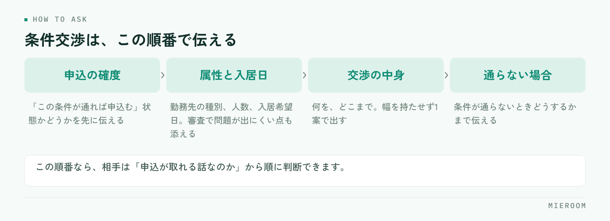

「家賃、少し下がりませんか」と聞かれたとき、そのまま管理会社に電話していないでしょうか。条件交渉が通るかどうかは、交渉の上手さではなく、先に何を確認したかで決まります。確認を飛ばした交渉は、通らないだけでなく、申込そのものを長引かせます。
この記事の結論
交渉の前に確認するのは、金額ではなく申込の確度と入居日です。「この条件が通れば申込む」という状態を作ってから出すと、交渉は通りやすくなります。賃料以外に動かせる条件を先に並べ、断られたときの代替案まで用意してから連絡してください。
交渉を受けたとき、最初に確認する3つのこと
交渉の相談を受けて、すぐ管理会社に確認を入れるのは早すぎます。先に次の3つをお客様に確認してください。
ひとつめは、この条件が通れば申込むのかどうかです。「通れば申込みます」と「通ったら考えます」では、交渉として出せる話が変わります。後者の状態で金額の相談を入れると、通ったあとに申込まれなかったときに、次の交渉が出しづらくなります。
ふたつめは入居希望日です。空室期間を短くできる入居日なら、それ自体が交渉の材料になります。みっつめは、ほかに比較している物件があるかどうかです。賃料より初期費用のほうが効く場合があります。
「いくらなら決めますか」から入ると、話が金額だけになります。先に入居日と優先順位を聞くと、賃料を動かさずに済む選択肢が出てきます。金額の話は、動かせる条件を並べたあとです。
賃料以外に動かせる条件を先に並べる
交渉というと賃料だけの話になりがちですが、実際に動く余地があるのは賃料以外の部分です。優先順位を決めて並べてください。
| 交渉する条件 | 通りやすさの傾向 | 向いている場面 |
|---|---|---|
| フリーレント | 比較的通りやすい | 入居日が先で、空室期間が気になる物件 |
| 初期費用の内訳 | 条件によって動く | 初期費用の総額が理由で迷っているとき |
| 設備の修繕・交換 | 入居前提なら相談しやすい | 内見で気になった点が決め手になっているとき |
| 入居日の調整 | 店側で調整できることが多い | 希望日と募集条件がずれているとき |
| 賃料の減額 | いちばん通りにくい | ほかの条件で埋まらない差があるとき |
賃料は最後に回します。月額が下がると、オーナー側は以後の募集条件にも影響すると考えるためです。同じ負担の軽減でも、一時的な条件のほうが受け入れられやすくなります。募集条件そのものの見直しをオーナーへ提案する場合の組み立て方は空室が動かないときの募集条件の見直しにまとめています。
管理会社・オーナーに伝える順番
交渉の連絡は、結論から入ると判断してもらえません。相手が判断に必要な材料を、順番に出してください。

- 申込の確度：「この条件が通れば申込む」という状態かどうかを先に伝える
- 入居者の属性と入居日：勤務先の種別、人数、入居希望日。審査で問題が出にくい点があれば添える
- 交渉の中身：何を、どこまで。幅を持たせず1案で出す
- 通らなかった場合の意向：条件が通らないときどうするかまで伝える
この順番で伝えると、相手は「申込が取れる話なのか」から順に判断できます。逆に金額から入ると、材料がないまま断る判断になりがちです。
通りやすい交渉と、通りにくい交渉の違い
同じ内容でも、出し方で結果が変わります。通りやすい交渉には共通点があります。
- 申込とセットになっている：条件が通れば申込む状態で出ている
- 幅がなく1案：「できるだけ下げてほしい」ではなく、具体的な1案で出ている
- 空室期間に触れている：入居日が早い、繁忙期を外さない、といった材料がある
- 代替案がある：賃料が無理ならフリーレント、という次の案まで用意されている
逆に通りにくいのは、申込の確度が分からないまま金額だけを聞く形、複数の条件を同時に出す形、そして根拠を言わずに「相場より高い」と伝える形です。交渉の回数が増えるほど通りにくくなるため、一度で決められる形にまとめてから連絡してください。
断られたときの代替案を用意しておく
断られる前提で準備しておくと、その場で次の話に進めます。用意するのは次の3つです。
ひとつは、別の条件への振り替えです。賃料が通らなかった場合に、フリーレントや設備の相談に切り替えます。ふたつめは、同条件帯の別物件です。交渉が通らない連絡で、次の提案を一緒に出せる状態にしておきます。みっつめは、断られた理由の記録です。
同じ物件で同じ交渉を何度も出すと、関係が悪くなります。「この物件はフリーレントは相談可、賃料は不可」といった結果が残っていれば、次の案件では最初から通る案だけを出せます。担当者の記憶だけに置かないでください。
店としてのルールを決めておく
交渉を担当者の判断に任せると、店として出す条件がばらつきます。次の3つを決めておいてください。
どこまで店長の確認なしで出せるか。 フリーレントの相談までは担当者、賃料の減額は店長の確認を通す、という線を決めます。出した交渉を記録に残す形。 誰が、どの物件に、何を出して、結果がどうだったか。案件の記録と同じ場所に残しておくと、引き継ぎのときに経緯が読めます。
そして、交渉中の案件を止めない仕組みです。回答待ちのまま数日動かない案件が、いちばん失注につながります。回答待ちの案件が一覧で見える形にしておけば、催促の判断ができます。申込段階の情報の持ち方は申込管理表の作り方の形がそのまま使えます。
家賃交渉はどこまでお願いできるものですか？
交渉の回答を待つ間、ほかのお客様に案内してよいですか？
交渉が通ったあとに申込がキャンセルされたときは？
まとめ：交渉は、確認と記録で通る形になる
条件交渉の進め方は3段です。先に申込の確度と入居日を確認する、賃料以外に動かせる条件から並べる、断られたときの代替案を用意して1案で出す。この形にすると、交渉の回数そのものが減ります。
そして出した交渉と結果を物件ごとに残すことが、次の案件を速くします。記録がなければ、同じ物件に同じ相談を繰り返すことになります。
ミエルームなら、反響から申込・入金までを案件ごとに1か所で記録できるので、回答待ちの案件や交渉の結果を担当者の記憶に預けずに済みます。接客と反響の成績もあわせて見えるため、どの段階で取りこぼしているかが後から追えます。回答待ちの案件を探す手間がなくなり、催促と次の提案の判断が早くなります。デモアカウントの発行やご相談は、この下のボタンからお気軽にどうぞ。